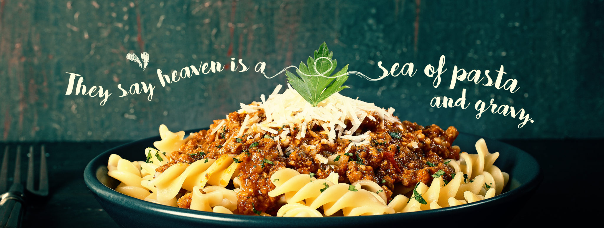

Ingredients
- 2 cup raw pasta
- 1 teaspoon oil
- Salt to taste
- Pasta sauce
- Parmesan cheese or feta cheese or mozzarella cheese for garnishing(optional)
Directions
-
Boil water
Start with a very large pot of water, about 6 quarts per pound of pasta. Bring it to a rapid boil.
-
Add salt
Put about 3 tablespoons of salt. If you taste the water, it should taste like the sea.
-
Add the pasta
Drop in the pasta while the water is at a boil and give it a gentle stir.
-
Stir
Stir it occasionally while it cooks. Use the cooking time on the pasta package as a guide.
-
Taste the pasta
But watch out — it's hot! Sample the pasta at about 2 minutes shy of the indicated time. It should be al dente. You'll finish cooking it in the sauce.
-
Drain
Drain the pasta. Just be sure to save about 1 cup of the pasta water. If you have a pot with a colander insert, use it to drain the pasta.
If not, drain the pasta in a colander set in the sink.
-
Stir in the sauce
Add the pasta to your sauce and finish cooking it in the sauce. Give it a stir to coat.
-
Add pasta water
Ladle a few tablespoons of the pasta water at a time until you have the right consistency to your sauce. Remember, the pasta will absorb the liquid.
-
Buon Appetito!
Simmer over medium-low heat — it'll help the pasta soak up the sauce.And that's all there is to it. Perfecto!